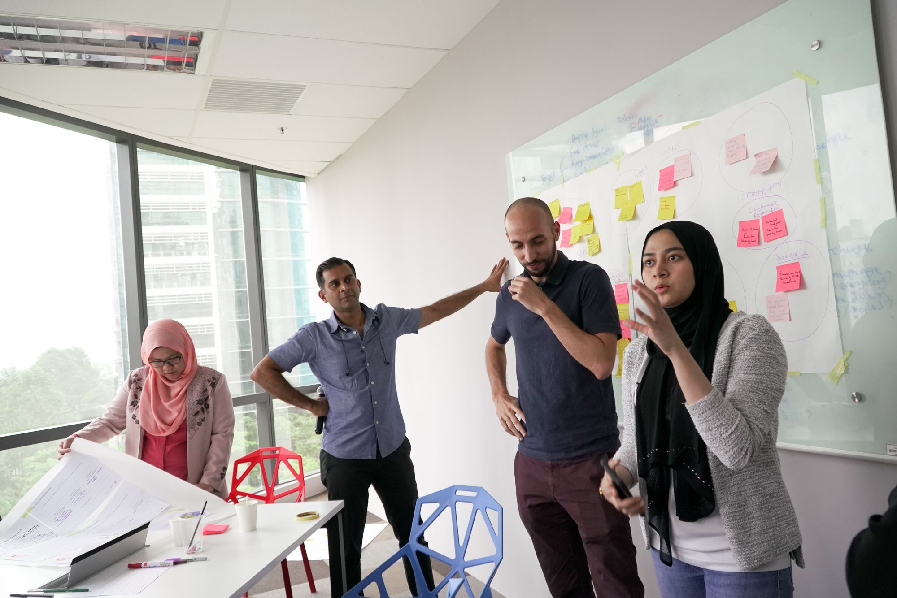
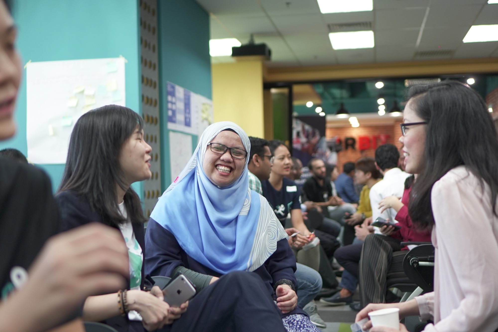
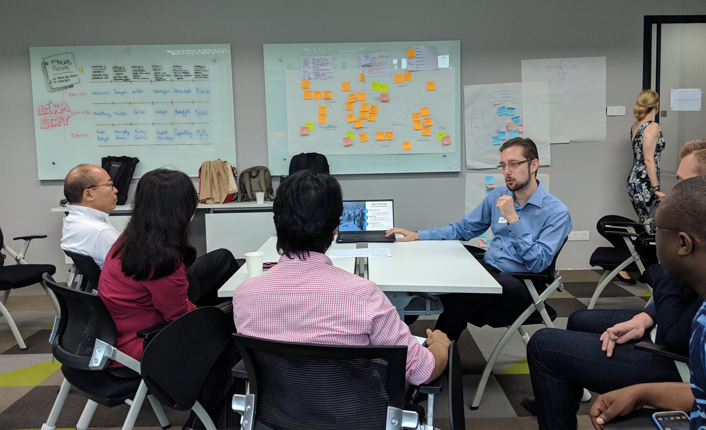
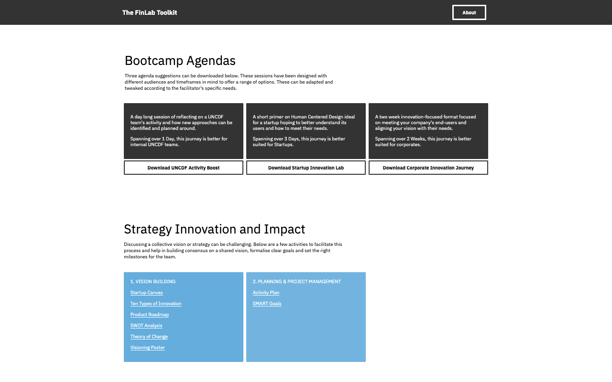
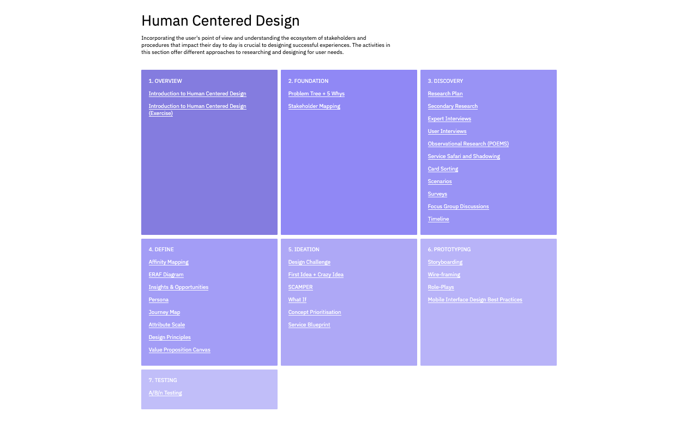
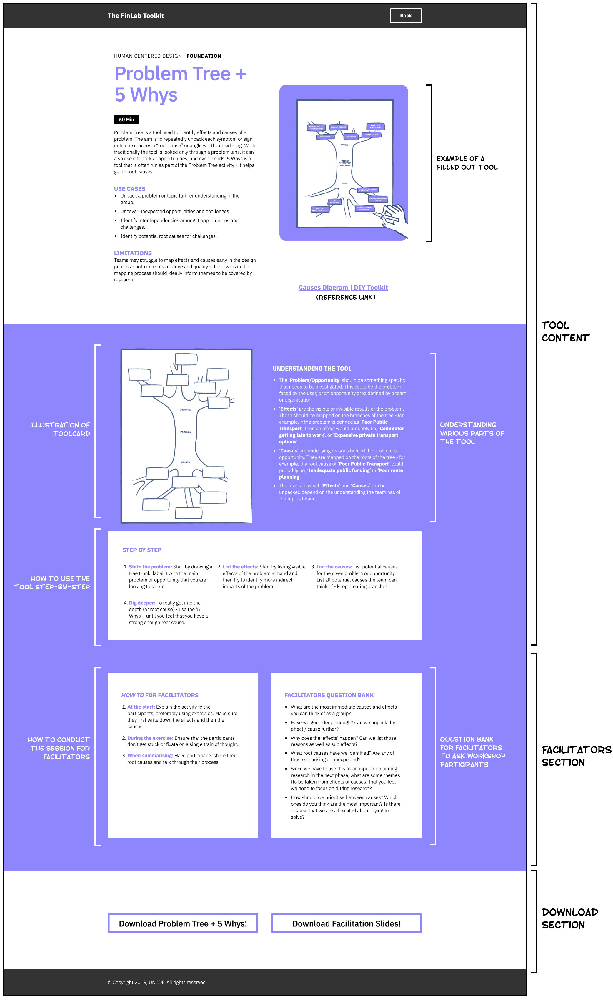

UNCDF FinLab Toolkit
Overview
UNCDF Malaysia ran 3 bootcamps to help 18 startups tailor their products to the B40 (Bottom 40% tax bracket in Malaysia) segment of the market. The bootcamps was designed and facilitated by Quicksand, with the intention of creating a repeatable version of the bootcamp to be subsequently run by the UNCDF team.
Role
Facilitator and Developer
Client
UNCDF Malaysia
For
Quicksand

Challenge
The UNCDF Financial Innovation Lab runs challenges to find and support solutions that help to promote inclusive and connected digital economies. As part of the Financial Innovation Lab, the United Nations Capital Development Fund (UNCDF) issues challenges to innovators in global markets across Asia, Africa, and the Pacific. The challenges reflect obstacles to inclusion in each market, that digital technologies present an opportunity to address. The challenges aim to stimulate the growth of new businesses and ideas to drive the development of inclusive digital economies.
The Financial Innovation Lab is a community of practice energised by its mission to achieve digital financial inclusion for the elimination of poverty worldwide. An initiative of the UN Capital Development Fund (UNCDF), the Lab aims to increase the accessibility of digital financial services and products for low- and middle-income people in Africa, Asia, and the Pacific by sharing knowledge and providing resources to develop impactful solutions.
Bootcamp
18 fintech start-ups were selected to work with UNCDF to develop and refine innovative new solutions. They attended the UNCDF led Bootcamps to learn and apply the design thinking process, working with mentors and partners from Bank Negara and MDEC amongst other companies. Quicksand was brought in as facilitators for the first cohort, to conduct the bootcamp, and help the startups refine their offering to help serve the B40 population better. Read more about the bootcamp on UNCDF's website ↗.
Across five days participating teams learnt about human centred design; a design methodology that aims to make systems usable and useful by focusing on the users, their needs and requirements, and by applying human factors, usability knowledge, and techniques1. For many of the start-ups this was their first experience of human centred design, and they expressed surprise at how quickly their assumptions were overturned. An initial exercise asked the teams to arrange themselves by how much they were already engaging with the B40 population.

The start-ups then learnt and applied a series of tools which helped them to define the problem or opportunity they were addressing. These included the problem tree and 5 whys, which are designed to help define the causes and effects of different problems.
One participant has worked in insurance for low-to-middle income people for decades but says that this exercise challenged his assumptions about their financial needs and wants. He spoke to the owner of a shop he has been visiting for decades; “Despite the fact I’ve known Mr. Yong for 20 years I never had the opportunity to understand his business, problems, dreams and aspirations. Talking to Mr. Yong gave me a new level of respect for small business owners.”

Practice pitching

Prepping finalists for pitch day
Toolkit
Over the 3 bootcamps, the participants were introduced to the process of Human Centred Design, and used various tools to use design thinking to refine their offering. After the conclusion of the bootcamp, Quicksand was tasked to put together all the tools and exercises from the bootcamp into an easy to use resource. After initially putting together a toolkit using openly available and easily collaborative technologies, we explored other formats of delivering the same information. After a few small prototypes, we eventually settled on the idea of creating a micro-site.

Home page of toolkit website

Breaking down each section of the bootcamp into easy to follow tools and templates

Tools are designed to be easy to understand and used without facilitation
This micro-site was powered by a spreadsheet on Google Sheets, and was hence still collaborative and easy to update. The website created is easy to use and presents information in various blocks, as would be required by the bootcamp participants and workshop facilitators. The tools and facilitation slides can be downloaded as required, with additional reference links provided where needed.

Each tool is designed to be used by both facilitators and end users